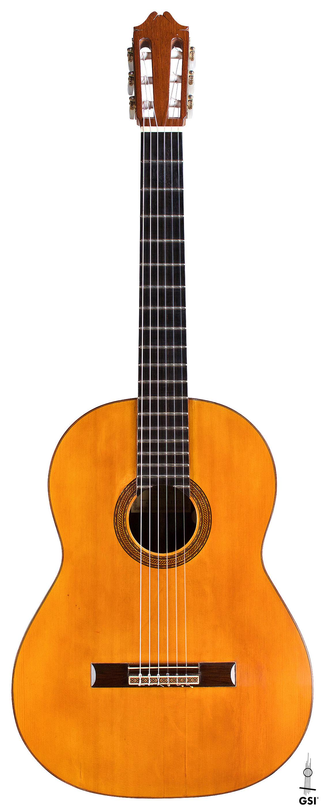
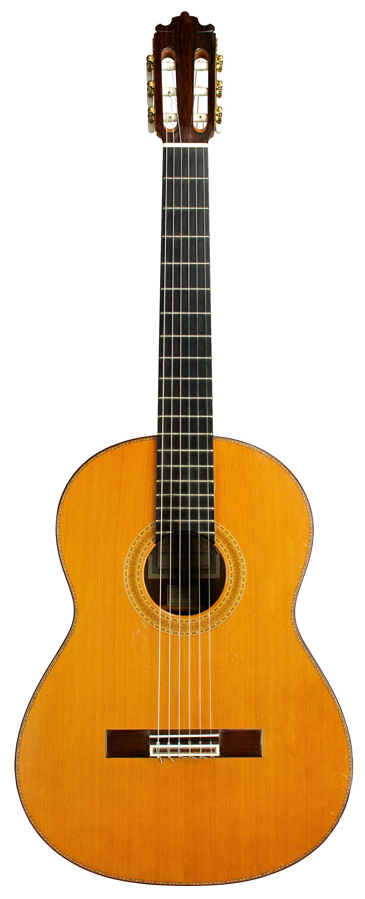
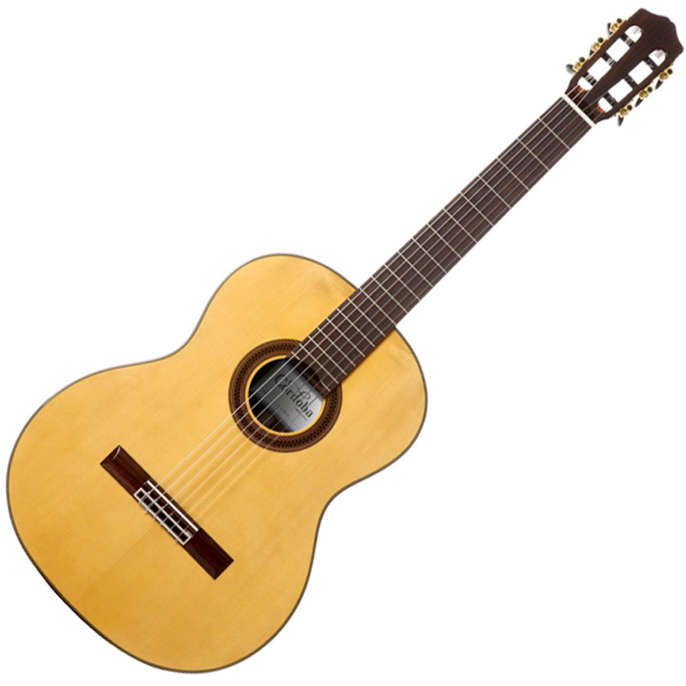
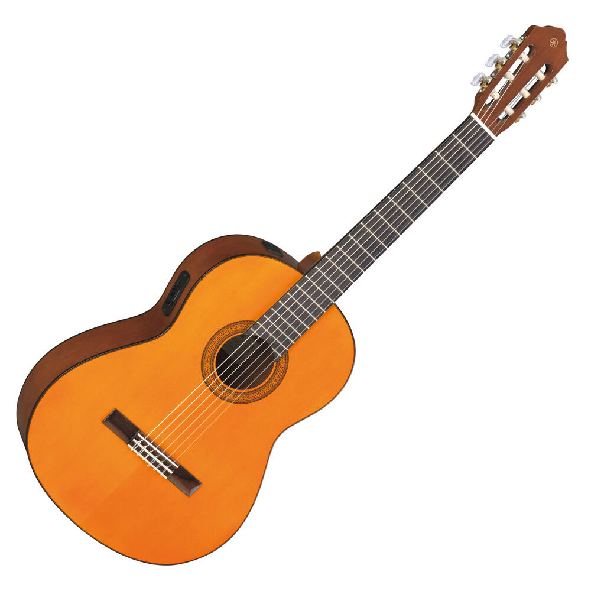
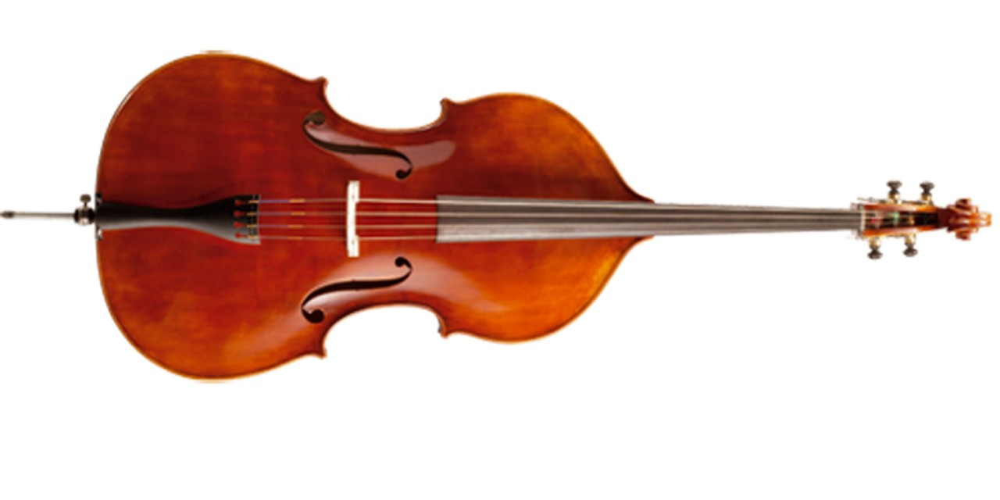
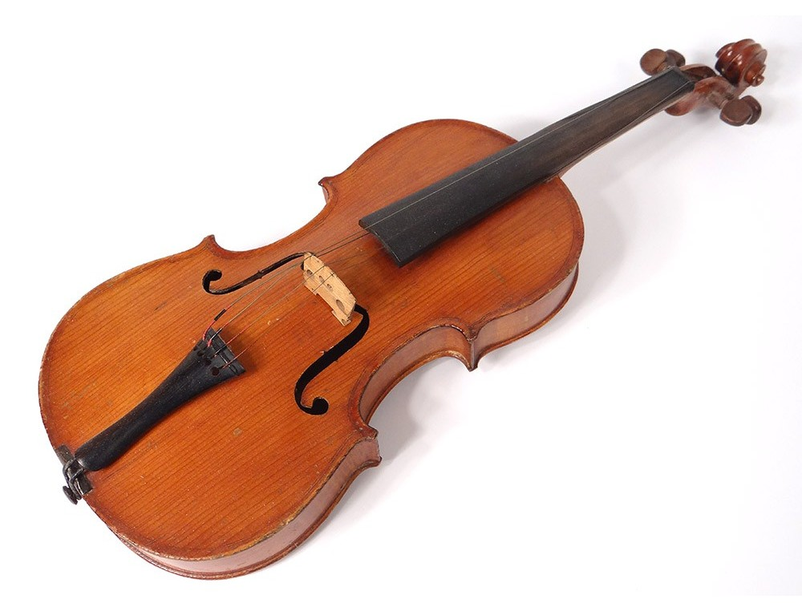
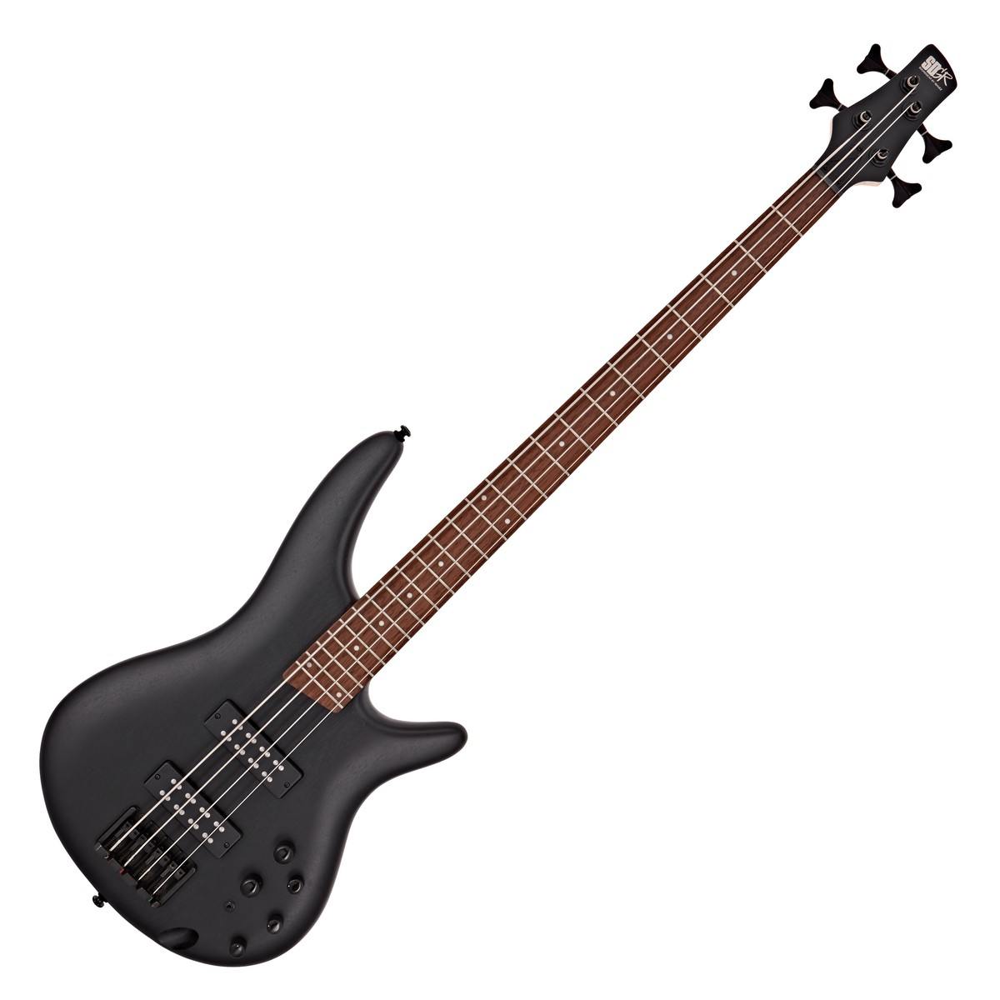
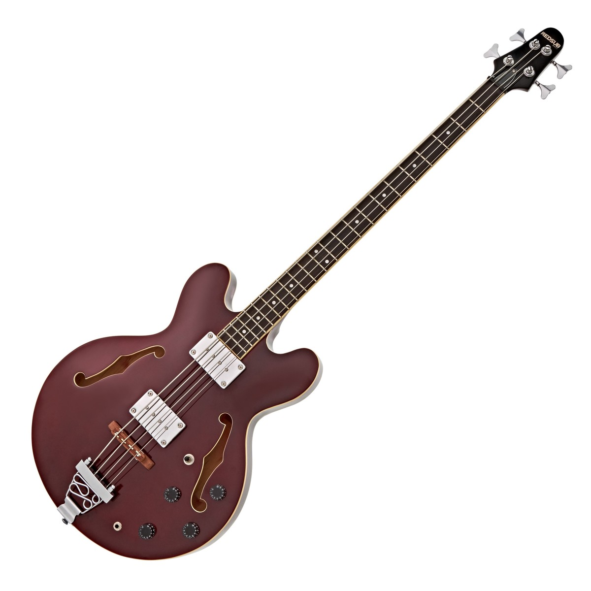
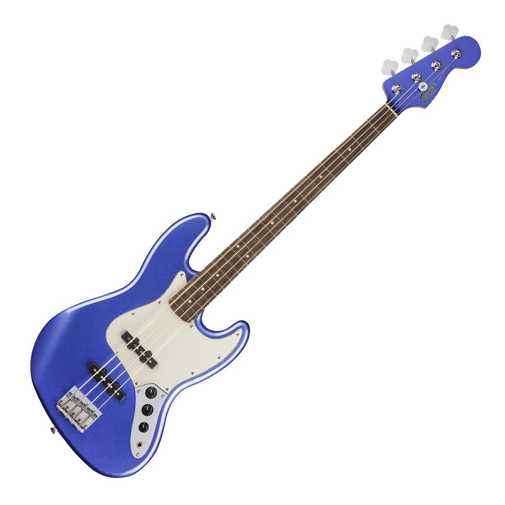

Instrumentos de Cuerda

Guitarra acústica con cuerdas de acero y estuche incluido, la tapa superior es de madera de abeto seleccionado y la tapa posterior y laterales son de madera de sapele, puente y diapasón son de palo de rosa, escala de 24 ¾ , afinadores cromados, numero de trastes 20.
$ 6,085.00
SKU H20-64695
Agregar Al Carrito

Guitarra acústica con cuerdas de acero, cuerpo tipo dreadnougth, tapa de agathis, laterales madera de sapele, escala 25 1/2 diapazon de palisandro.
$ 3,580.00
SKU H20-64685
Agregar Al Carrito

Guitarra acústica EA10EBCH1
Guitarra cuerdas de acero.
Cuerpo y brazo de Caoba.
Diapasón de Palo de Rosa.
Forma Dreadnought.
Maquinaria premium.
Color Negro.
$ 3,710.00
SKU H20-14935
Agregar Al Carrito

Guitarra clásica acústica cuerdas de nylon. Tapa de Abeto. Laterales y fondo de caoba. Brazo de caoba. Diapasón de Laurel. Acabado en color natural.
$ 4,020.00
SKU H20-60027
Agregar Al Carrito

Violin de 4/4 tapa, costillas y fondo madera de abeto, cordal con afinador, diapason y clavijas de madera, incluye arco, brea, funda y estuche.
$ 1,305.00
SKU H20-64676
Agregar Al Carrito

Violin de 3/4 tapa, fondo y costillas madera de abeto solido, diapason y clavijas negro teñido, incluye arco, brea y estuche.
$ 1,115.00
SKU H20-48791
Agregar Al Carrito

Color: Negro
Cuerpo: Madera de Tilo
Cuello: Madera de Maple
Diapasón: Madera de Palo de Rosa
Maquinaria: M-01
Longitud de la escala: 864mm
Trastes: 21
Controles: 1 Volúmen, 1 Tono
Acabado: Brillante
$ 2,760.00
SKU H20-49235
Agregar Al Carrito

Color: Sunburst
Cuerpo: Madera de Tilo
Cuello: Madera de Maple
Diapasón: Madera de Palo de Rosa
Maquinaria: M-01
Longitud de la escala: 864mm
Trastes: 21
Controles: 1 Volúmen, 1 Tono
Acabado: Brillante
$ 2,760.00
SKU H20-49236
Agregar Al Carrito

Bajo Electrico De 4 Cuerdas RB CORVETTE 4 BK SHP CHR
Escala larga de 34".
Cuerpo de aliso.
Construcción a través del cuerpo (neck-through).
Mástil de 3 piezas de arce laminado con tiras de chapa de ekanga.
Diapasón de wengué.
Radio de 20".
$ 14,250.00
SKU R20-03600
Agregar Al Carrito